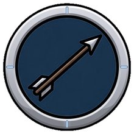

手搓廣告遊戲選集 · 吸血鬼復仇
絕域獵手的圈外加成我調到 +18%（不是提案的 +25%）， 邊界抖動實測沒有——而且風險其實在慢的敵人那邊，不是衝刺型。 順手抓到月嚎將永遠拿不到的 bug。下半是道士的規劃。
獵魔弓在圈外本來就吃到最多 +90%，兩者相乘：
| 倍率 | |
|---|---|
| 圈外最遠（弓 ×1.90 × 圈 ×1.18） | ×2.24 |
| 圈內最近（弓 ×0.45 × 圈 ×0.75） | ×0.34 |
| 落差 | 6.6 倍 |
給 +25% 的話落差是 7.0 倍。在一個「敵人一定會貼上來」的遊戲裡， 7 倍等於「被貼到就是死刑」。+18% 仍然明顯感覺得到，但留了活路。 資料驗證新增一條「遠近落差不超過 8 倍」，之後誰調參數都會被擋住。
你擔心的是衝刺型，但算下來慢的才是風險——殭屍 46px/s 半秒只走 0.38 個單位， 一個固定推力就把它完全頂住，剛好卡在邊界前後晃。
所以推力做成隨深入程度遞減、圈邊界為零：沒有任何速度會剛好被抵銷， 抖動從結構上就不存在。實測四種：
zombie 距離 2.68~5.50（圈半徑 3.00）方向翻轉 0 次 ✓
shadowbeast 距離 0.35~5.50 翻轉 2 次 ✓
hellhound 距離 0.83~5.50 翻轉 3 次 ✓
wisp 距離 0.54~5.50 翻轉 0 次 ✓
讀法：慢的（殭屍）被擋在 2.68 進不來，快的（暗影獸 0.35）照樣衝到臉上。 這正是設計要的——絕域圈是「篩子」不是「牆」。
月嚎將的轉職任務計數器 lowHpKills 條件寫的是 if (Frenzied)，
而 Frenzied 的定義包含「已經有月嚎將」——但轉職任務只在
「還沒有職業」時才會被檢查。所以那個計數器永遠是 0，月嚎將永遠不會被提供，
而且遊戲裡完全看不出來，只是那個職業從來沒出現過。
狼人（無職業、低血）擊殺 0 → 10 ✓ 修好了
獵人（無職業）遠處擊殺 0 → 1 ✓ 絕域獵手沒有踩同一個坑
通則已寫進程式註解：轉職任務的計數器不能依賴「已經有那個職業」的任何狀態。

美術只花了 $0.20（職業圖示），圈的視覺用程式畫的 SpriteFactory.Ring。
現有六隻裡四隻是純數值修正，只有屍語者（數量）與不朽者（受傷疊傷害）改變玩法。 四個專屬職業各佔一個軸：反應式／數量／狀態／空間。
道士要佔的第五個軸是「時機」——預置與延遲。
遊戲裡現在所有東西都是「對當下的反應」：自動瞄準最近的、光環繞著你、地帶踩在你腳下。 沒有任何東西要求玩家想在敵人前面。 而這款遊戲的核心循環本來就是 「一路跑、身後拖著一大群」——沿路埋符、讓追你的那群自己踩上去， 是一個既全新、又完全貼合既有循環的玩法。
實作上有現成的前例：霜痕靴已經在做「移動時沿路留下東西」這件事， 機制骨架可以直接沿用。
三把全部對映到既有的武器家族，不需要新家族。
| 武器 | 家族 | 攻擊方式 | 進化 |
|---|---|---|---|
| 桃木飛劍 🗡 | Projectile | 三把小木劍環繞在身邊，冷卻好時朝最近的敵人飛出去，會追蹤 | 五雷斬：飛劍變五把，每次命中額外引落一道雷 |
| 鎮煞符 📜 | Zone | 把符擲到敵群，貼地 1 秒後才生效，生效後展開金光陣，持續傷害＋減速 | 五雷正法陣：陣中不斷落雷，範圍與持續時間大幅提升 |
| 金剛鈴 🔔 | Nova | 以自身為中心擴散梵音波，命中的敵人被短暫定住 | 大梵音：波次更密、定身更久，並對被定住的目標追加傷害 |
「延遲生效」是唯一要加的新欄位（Zone 家族多一個 ArmDelay），其餘全部是既有欄位。
佛法的部分由金剛鈴這一路承擔（法器／梵音／結界）， 道的部分由符咒與桃木劍承擔——這兩套在民間信仰裡本來就是混著用的。
RequiresCharacter = "taoist"你放下的每一個符、每一個陣，生效時間再延後 0.8 秒，但威力 +60%， 而且在生效的瞬間把周圍的敵人拉向中心。
用一句話講就是：你放的東西從「傷害」變成「陷阱」。 更慢、更痛、還會自己聚怪。
「拉向中心」用的是既有的
Pull欄位（隕星引力那條），不是新東西。
| 職業 | 軸 | 你在玩什麼 |
|---|---|---|
| 血鎖裁判 | 反應式 | 被打之後發生什麼 |
| 亡者牧者 | 數量 | 有幾個東西在打 |
| 月嚎將 | 狀態 | 你現在處在什麼狀態 |
| 絕域獵手 | 空間 | 敵人離你多遠 |
| 因果法師 | 時機 | 你多久以前做了什麼 |
轉職任務會用「本局用延遲生效的東西擊殺 N 隻」——同樣不依賴已經有這個職業 （月嚎將那個坑不會再踩）。
| 項目 | 規格 |
|---|---|
| 角色立繪 | Art/Characters/taoist.png |
| 走路 | Art/Characters/Walk/taoist/ 10~12 幀 256px，側面朝右，佔框 0.85 以上 |
| 攻擊 | Art/Characters/Attack/taoist/ 8 幀 |
| 武器圖示 | Art/Icons/{id}.png 220px，單一剪影＋粗外框＋少細節 |
| 特效 | Art/Fx/{name}/ 14 幀 |
| 去背 | 綠幕 #00FF00、本地演算法 |
| 項目 | 金額 |
|---|---|
| 角色立繪彙整圖（道士 ＋ 因果法師造型） | $0.20 |
| 武器／職業圖示彙整圖（6 武器 ＋ 1 職業，7 格） | $0.20 |
| 道士 走路 ＋ 攻擊 影片 ×2 | $0.64 |
| 特效 ×3（符陣／飛劍／梵音波） | $0.96 |
| 小計 | $2.00 |
| 職業專屬走路／攻擊 ×2（建議先不做） | +$0.64 |
現有六個職業裡有三個沒有專屬動畫（血族領主、月嚎將、亡者牧者）， 所以先不做不會突兀。
先出規劃，一行程式、一張圖都沒動。等你決定要不要往下做、或先調方向。
→ 上一頁：絕域獵手提案 → v3 完成報告